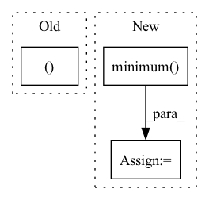

Pattern ID :40272
Before Change
prev_rejected = not accepted
rk_state = (fnew, tnew, ynew, h)
return rk_state, t1_achieved
class RK23(RKAdaptiveStepSolver):
error_estimator_order = 2
After Change
new_factor = self.step_mult * (errnorm + 1e-8) ** self.error_exponent
// if accepted and not t1_achieved:
if accepted:
factor = torch.minimum( torch.full_like(new_factor, self.max_factor), new_factor)
if prev_rejected:
factor = torch.minimum(torch.ones_like(factor), factor)
not_t1_achieved = torch.logical_not(t1_achieved)
h[not_t1_achieved] *= factor[not_t1_achieved]
In pattern: SUPERPATTERN
Frequency: 3
Non-data size: 3
Instances Fragment ID: 114227468
Project Name: xitorch/xitorch
Commit Name: c6f0785664d60d1310778d43f14a3464660ea4d9
Time: 2021-12-30
Author: firman.kasim@gmail.com
File Name: xitorch/_impls/integrate/ivp/adaptive_rk.py
M Class Name: RKAdaptiveStepSolver
N Class Name: RKAdaptiveStepSolver
M Method Name: _single_step(3)
N Method Name: _single_step(3)
M Parent Class: object
N Parent Class: object
M File Name: xitorch/_impls/integrate/ivp/adaptive_rk.py
N File Name: xitorch/_impls/integrate/ivp/adaptive_rk.py
M Start Line: 85
M End Line: 122
N Start Line: 125
N End Line: 165
Before Change
idxs.append(idx.item())
dist_new_ctr = torch.cdist(unlabeled_embeddings, unlabeled_embeddings[[idx],:])
for j in range(m):
min_dist[j] = min(min_dist[j], dist_new_ctr[j,0 ])
return idxs
After Change
idx = torch.argmax(min_dist)
idxs.append(idx.item())
dist_new_ctr = torch.cdist(unlabeled_embeddings, unlabeled_embeddings[[idx],:])
min_dist = torch.minimum( min_dist, dist_new_ctr[:,0])
return idxs
def select(self, budget): Fragment ID: 114227469
Project Name: decile-team/distil
Commit Name: fca600274b0f0558506141932f15aecbf2fecd0b
Time: 2021-08-21
Author: nab170130@utdallas.edu
File Name: distil/active_learning_strategies/core_set.py
M Class Name: CoreSet
N Class Name: CoreSet
M Method Name: furthest_first(4)
N Method Name: furthest_first(4)
M Parent Class: Strategy
N Parent Class: Strategy
M File Name: distil/active_learning_strategies/core_set.py
N File Name: distil/active_learning_strategies/core_set.py
M Start Line: 41
M End Line: 57
N Start Line: 53
N End Line: 54
Before Change
continue
// create empty new rule column
reduced_matches_col = np.zeros((full_matches.shape[0]After Change
// take care of multiple matches per row --> reduce them to one
if isinstance(full_matches, ss.csr_matrix):
reduced_matches_col = ss.csc_matrix(reduced_matches_col).minimum( 1)
else:
reduced_matches_col = np.minimum(reduced_matches_col, 1).reshape(-1, 1)
reduced_matches.append(reduced_matches_col) Fragment ID: 114227464
Project Name: knodle/knodle
Commit Name: 3ed4f6f0c14a634e8976ab9d9d7ab1e95aface4d
Time: 2021-05-31
Author: 19635192+marina-sp@users.noreply.github.com
File Name: knodle/transformation/rule_reduction.py
M Class Name: AnonimousClass
N Class Name: AnonimousClass
M Method Name: _get_merged_matrix(3)
N Method Name: _get_merged_matrix(3)
M Parent Class:
N Parent Class:
M File Name: knodle/transformation/rule_reduction.py
N File Name: knodle/transformation/rule_reduction.py
M Start Line: 188
M End Line: 205
N Start Line: 229
N End Line: 253